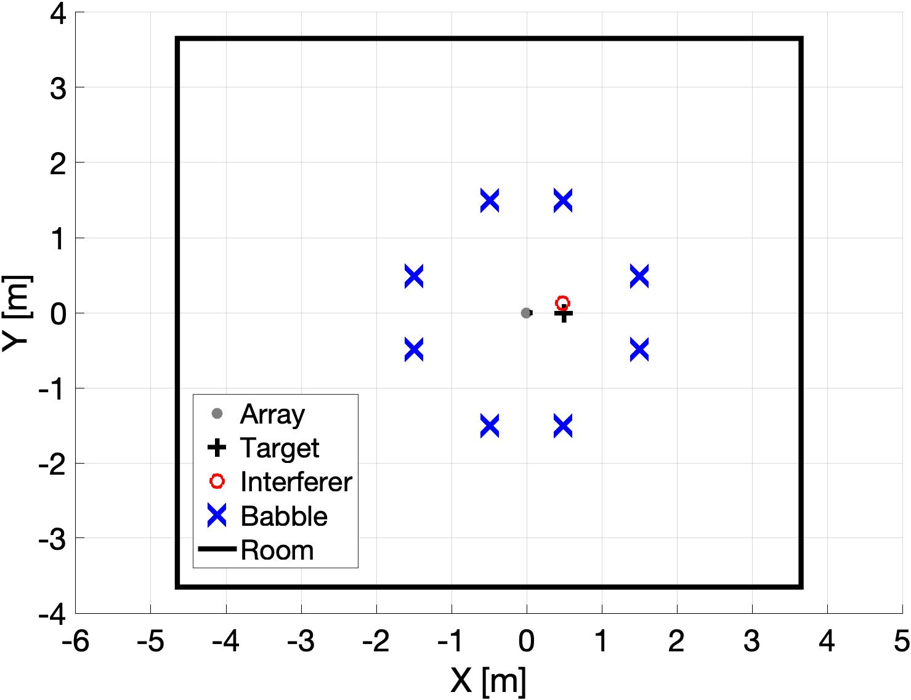
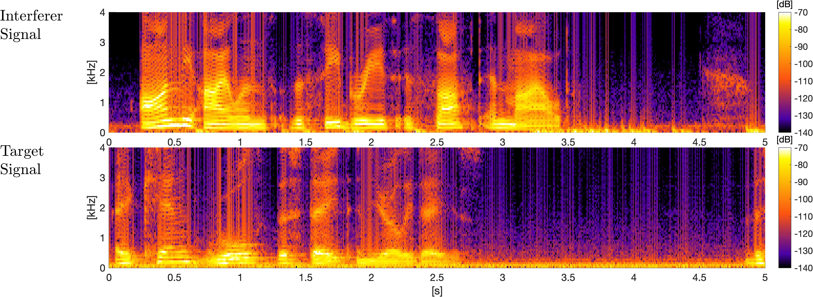

Audio examples for paper "A Compact Noise Covariance Matrix Model for MVDR Beamforming"
Alastair H. Moore, Sina Hafezi, Rebecca R. Vos, Patrick A. Naylor, Mike Brookes
List of Acronyms:
- SIR: Signal-to-Interference Ratio
- SBNR: Signal-to-Babble Noise Ratio
- SSNR: Signal-to-Sensor Noise Ratio
- RIR: Room Impulse Response
Room-Array Configurations:
- Room Dimension: 8.3 x 6.5 x 2.9 m
- Array Type: 32-element rigid Spherical Microphone Array (em32 Eigenmike®, 4.2cm radius)
- Array Location: (4.65 , 3.25 , 1.5) m
Datasets:
- Raw Speeches: The Open Speech Repository. [Online]
- Measured RIR Dataset: Orhun Olgun, & Huseyin Hacihabiboglu. (2019). METU SPARG Eigenmike em32 Acoustic Impulse Response Dataset v0.1.0 (Version 0.1.0) [Dataset]. Zenodo. [Online]
- Simulated RIR: D. P. Jarrett, “Spherical Microphone array Impulse Response (SMIR) generator.” [Online]
Fig.1 - Setup for Measured RIR.

Fig.2 - Setup for Simulated RIR.
A. Varying separation & noise (based on measured RIR)
T60:1.12 s, C50:5.4~2.3 dB, source-array range:1.0~1.4 m, babble-array range:1.6 m, SSNR:40 dB
Separation: 27°, SIR: -5 dB, SBNR: 10 dB

Separation: 27°, SIR: 0 dB, SBNR: 20 dB
Separation: 45°, SIR: -10 dB, SBNR: 20 dB
Separation: 27°, SIR: 0 dB, SBNR: 10 dB
Separation: 27°, SIR: 0 dB, SBNR: 10 dB
B. Varying reverberation (based on simulated RIR)
Separation: 15°, SIR: -5 dB, SBNR: 15 dB, SSNR: 40 dB, source-array range: 0.5 m, babble-array range: 1.6 m